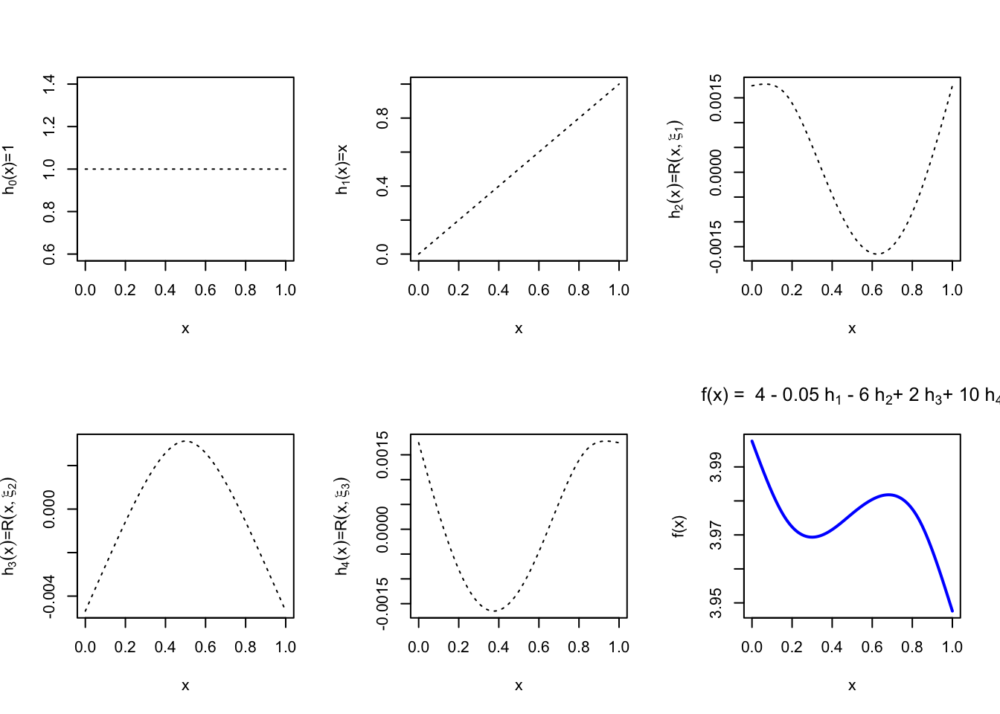
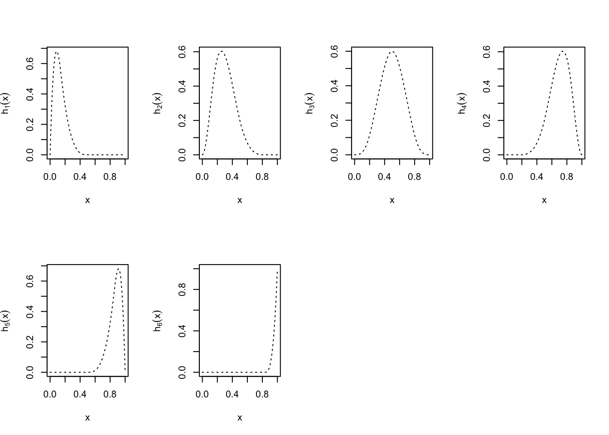
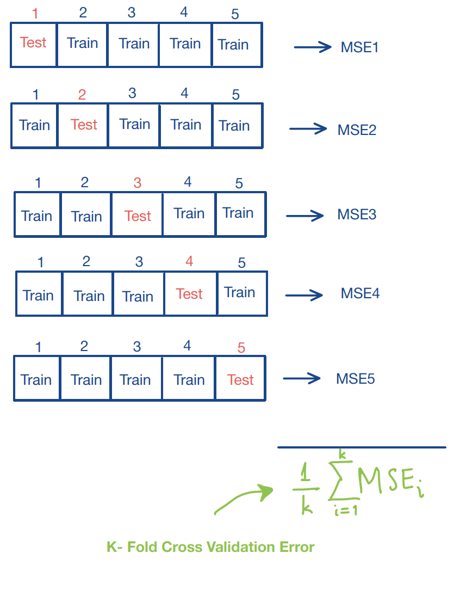

4.2 Splines Regression
Splines are piecewise polynomials thar are constructed so that thay can be both sensitive and smooth, but also capture local features of the data.
A Cubic Spline is a curve constructed from sections of cubic polynomials, joined together so that the curve is continuous up to second derivative. The points at which the sections join are called the knots of the spline. For a conventional spline, the knots occur wherever there is a datum, but for the regression splines the locations of the knots must be chosen. Typically, the knots would either be evenly spaced through the range of observed \(x\) values, or placed at the quantiles of the distribution of unique \(x\) values. Each section of cubic has different coefficients, but at the knots it will match its neighboring sections in value and first two derivatives.
Cubic Splines (Mathematical) Definition
A function \(g\) defined on \([a,b]\) is a cubic spline with respect to knots \(\{\xi_i\}_{i=1}^m\) (specifically \(a<\xi_1<\xi_2<\ldots<\xi_m<b\)) if:
\(g\) is a cubic polynomial in each of the \(m+1\) intervals, i.e. \[g(x) =d_ix^3+c_ix^2+b_ix+a_i,\quad x\in [\xi_i,\xi_{i+1}]\] where \(i=0,\ldots, m\), \(\xi_0=a\) and \(\xi_{m+1}=b\).
\(g\) is continuous up to the 2nd derivative. Since \(g\) is continuous up to the 2nd derivative for any point inside an interval, it suffices to check the following conditions: \[g^{(0,1,2)} (\xi_i^+)=g^{(0,1,2)}(\xi_i^-),\quad i=1, \ldots, m\] This expression indicates that the function and the first and second order derivatives are continuous at the knots.
How many free parameters do we need to represent a cubic spline?
(+) 4 parameters \((d_i,c_i,b_i,a_i)\) for each of the \((m+1)\) intervals.
(-) 3 constraints at each of the \(m\) knots (continuity constraints).
The total number of free parameters (similar to the number of degrees of freedom) is: \[4(m+1) - 3m = m + 4\]
A property of the cubic splines
Suppose the knots \(\{\xi_i\}_{i=1}^m\) are given.
- If \(g_1(x)\) and \(g_2(x)\) are cubic splines, the linear combination
\[a_1g_1(x)+a_2g_2(x)\]
is also a cubic spline, where \(a_1\) and \(a_2\) are known constants.
That is, for a set of given knots, the corresponding cubic splines form a linear space (of functions) with dim \((m + 4)\).
4.2.1 Examples of Cubic Splines Basis
- A set of basis functions for cubic splines (w.r.t knots \(\{\xi_i\}_{i=1}^m\)) is given by: \[\begin{align*} h_0(x)&= 1\\ h_1(x)&=x\\ h_2(x)&=x^2\\ h_3(x)&=x^3;\\ h_{i+3}(x) &= (x-\xi_i)_+^3,\quad i=1,2,\ldots,m\\ \end{align*}\] That is, any cubic spline can be uniquely expressed as: \[ \beta_0 +\sum_{j=1}^{m+3}\beta_j h_j(x)\]
- Given knot locations, there are many alternative, but equivalent ways of writing down a basis for cubic splines. For example, another basis for cubic splines can be written as: \[\begin{align*} h_0(x) &= 1\\ h_1(x) &= x\\ h_{i+1}(x) &= R(x, \xi_i^*),\,\, i=1, \ldots, q-1 \end{align*}\] where \[\begin{align*} R(x,z) &= \left[ (z-1/2)^2 - 1/12\right] \left[ (x-1/2)^2 - 1/12\right]/4\\ & \quad \,- \left[ (|x-z|-1/2)^4 - 1/2 (|x-z|-1/2)^2 + 7/240\right] /24\\ \end{align*}\]
An Example of a Cubic Splines Basis
We first define the function \(R(x,z)\) as above in R:
R_xz <- function(x,z){
((z-0.5)^2-1/12)*((x-0.5)^2-1/12)/4-((abs(x-z)-0.5)^4-(abs(x-z)-0.5)^2/2+7/240)/24
}We then need to define the knots
In regression examples the \(x\) variable will be the predictor (there is no need to generate any \(x\) values). Here, we need a “generic” \(x\) for illustration purposes.
Finally, we defined the splines functions, based on the definition given above:
spline1 = rep(1, length(x)) # First basis function
spline2 = x # Second basis function
spline3 = R_xz(x,new.knots[1]) # Third basis function
spline4 = R_xz(x,new.knots[2]) # Fourth basis function
spline5 = R_xz(x,new.knots[3]) # Fifth basis function If we want to represent a function using the basis above, we have:
For illustration purposes, we plot the basis functions defined above as well as the function \(f\):
par(mfrow = c(2,3))
plot(x, spline1, type='l', lty=3, ylab=expression("h"[0]*"(x)=1"))
plot(x, spline2, type='l',lty=3, ylab=expression("h"[1]*"(x)=x"))
plot(x, spline3, type='l',lty=3, ylab=expression(paste(h[2](x))*"="*paste(R(x,xi[1]))) )
plot(x, spline4, type='l',lty=3, ylab=expression(paste(h[3](x))*"="*paste(R(x,xi[2]))) )
plot(x, spline5, type='l',lty=3, ylab=expression(paste(h[4](x))*"="*paste(R(x,xi[3]))) )
plot(x, fun1s, type='l', ylab="f(x)", main=expression("f(x) = 4 - 0.05 h"[1]*" - 6 h"[2]*"+ 2 h"[3]*"+ 10 h"[4]), col="blue", lwd=2)
4.2.2 B-Splines Basis Functions in R
In this class, one of the cubic splines basis that we are going to use is called B-Splines.
Cubic B Splines Definition
The cubic B Splines basis is defined on an interval \([a,b]\) by the following requirements on the interior basis functions with knotpoints at \(\{\xi_i\}_{i=1}^m\):
A given basis function is nonzero on an interval defined by four successive knots and zero elsewhere.
The basis function is a cubic polynomial for each subinterval between successive knots.
The basis function is continuous and is also continuous in its first and second derivatives at each knotpoint.
The basis function integrates to 1 over its support.
The boundary function definitions are adjusted to account for continuity in derivatives at the boundaries of the interval.
These are part of the splines library in R and the function to generate then is called bs. The arguments of the bs function are:
\[ bs(x, df, knots, degree, intercept, Boundary.knots) \]
The R documentation can be found here.
Arguments in the bs function:
xis the predictor, i.e. the variable to which we want to apply the splines function.dfare the degrees of freedom for the splines functions.knotsare the internal breakpoints/knots that define the spline, i.e. location where the knots should be placed.degreeis the degree of the piecewise polynomial. The default isdegree=3for cubic splines.interceptis whether we want to add an intercept in the splines basis or not. This is not the intercept in the regression we perform. The default isintercept=FALSE.Boundary.knotsare the boundary points at which we “anchor” the B-splines basis. The default values are obtained from the range of non-NA values ofx, i.e.Boundary.knots=FALSE.
So, in our examples, we will need to feed the appropriate predictor x and then the desired knots or degrees of freedom, df, not both. The rest we leave them at their default values.
The output of the bs() function is a matrix of dimension c(length(x), df), if df was supplied or of dimension df = length(knots) + degree (+1 if intercept=TRUE) if knots were supplied.
Knots or Degrees of Freedom in bs()
As we mentioned, we need to supply the degrees of freedom or the location of the knots in the bs() function, and of course there is an equivalence between the two. Some details to keep in mind on how you can correctly specify these arguments:
- If you know where the knots should be placed, then you need to define a vector of the locations of the knots and input that in the
knotsargument in thebs()function. For example,
Defining knots location in bs()
library(splines)
x=seq(0, 1, by=0.01) # generic `x` for illustration purposes
new.knots= c(1/6, 3/6, 5/6) # define three knots at locations 1/6, 3/6, 5/6.
Bsplines.basis1 = bs(x, knots=new.knots)
head(Bsplines.basis1)## 1 2 3 4 5 6
## [1,] 0.000000 0.0000000 0.0000000 0 0 0
## [2,] 0.165912 0.0034896 0.0000144 0 0 0
## [3,] 0.304896 0.0135168 0.0001152 0 0 0
## [4,] 0.418824 0.0294192 0.0003888 0 0 0
## [5,] 0.509568 0.0505344 0.0009216 0 0 0
## [6,] 0.579000 0.0762000 0.0018000 0 0 0In this case, R calculates the degrees of freedom using the following formula:
\[\text{df = length(knots) + degree}\]
or if intercept=TRUE then
\[\text{df = length(knots) + degree + 1}\]
- If you prefer to specify the degrees of freedom, then the function
bs()choosesdf-degreemany knots at suitable quantiles of \(x\) (ignoring any missing values). If you specifiedintercept=TRUE, then the number of knots will bedf-degree-1. For example,
Defining knots location in bs()
x=seq(0, 1, by=0.01) # generic `x` for illustration purposes
Bsplines.basis2 = bs(x, df=4)
head(Bsplines.basis2)## 1 2 3 4
## [1,] 0.000000 0.000000 0.000000 0
## [2,] 0.058214 0.000592 0.000002 0
## [3,] 0.112912 0.002336 0.000016 0
## [4,] 0.164178 0.005184 0.000054 0
## [5,] 0.212096 0.009088 0.000128 0
## [6,] 0.256750 0.014000 0.000250 0As an example, below we plot the first 7 B Splines basis functions:
Illustration of B Splines Basis Function
## [1] 101 6## 1 2 3 4 5 6
## [1,] 0.000000 0.0000000 0.0000000 0 0 0
## [2,] 0.165912 0.0034896 0.0000144 0 0 0
## [3,] 0.304896 0.0135168 0.0001152 0 0 0
## [4,] 0.418824 0.0294192 0.0003888 0 0 0
## [5,] 0.509568 0.0505344 0.0009216 0 0 0
## [6,] 0.579000 0.0762000 0.0018000 0 0 0par(mfrow = c(2,4))
plot(x, Bsplines.basis[,1], type='l', lty=3, ylab=expression(paste(h[1](x))))
plot(x, Bsplines.basis[,2], type='l',lty=3, ylab=expression(paste(h[2](x))))
plot(x, Bsplines.basis[,3], type='l',lty=3, ylab=expression(paste(h[3](x)) ))
plot(x, Bsplines.basis[,4], type='l',lty=3, ylab=expression(paste(h[4](x))))
plot(x, Bsplines.basis[,5], type='l',lty=3, ylab=expression(paste(h[5](x))))
plot(x, Bsplines.basis[,6], type='l',lty=3, ylab=expression(paste(h[6](x))))
4.2.3 Natural Cubic Splines (NCS)
A cubic spline on \([a, b]\) is a Natural Cubic Spline if its second and third derivatives are zero at \(a\) and \(b\). This condition implies that NCS is a linear function in the two extreme intervals \([a,\xi_1]\) and \([\xi_m,b]\). The linear functions in the two extreme intervals are completely determined by their neighboring intervals. The degrees of freedom of NCS’s with \(m\) knots are: \[4(m+1)-3m -4=m\] since we have 4 additional constraints (the ones on the boundary points).
Remark: For a curve estimation problem with data \((x_i,y_i)^n_{i=1}\), if we put \(n\) knots at the \(n\) data points (assumed to be unique), then using NCS we obtain a smooth curve passing through all \(y\)’s.
Natural Cubic Spline
A Natural Cubic Spline with \(m\) knots is represented by \(m\) basis functions, for example one such basis is given by \[\begin{align*} N_1(x) &= 1\\ N_2(x) &= x\\ N_{k+2} (x) &= d_k(x) - d_{k-1}(x) \end{align*}\] where \[d_k(x) = \frac{(x-\xi_k)_{+}^{3} - (x-\xi_{m})_{+}^{3}}{\xi_m - \xi_k}\] Each of these derivatives can be seen to have zero second and third derivative for \(x\geq \xi_m\).In R we can find the NCS as part of the splines library, by calling the ns() function. Specifically, we have that
\[ ns(x, df, knots, intercept=TRUE, Boundary.knots) \]
Natural Cubic Splines in R
## [1] 101 4par(mfrow = c(2,3))
plot(x, NCS.basis[,1], type='l', lty=3, ylab=expression(paste(h[1](x))))
plot(x, NCS.basis[,2], type='l',lty=3, ylab=expression(paste(h[2](x))))
plot(x, NCS.basis[,3], type='l',lty=3, ylab=expression(paste(h[3](x)) ))
plot(x, NCS.basis[,4], type='l',lty=3, ylab=expression(paste(h[4](x))))
Recall that the linear functions in the two extreme intervals are completely determined by the other cubic splines. This means that data points in the two extreme intervals (i.e., outside the two boundary knots) are wasted since they do not affect the fitting. Therefore, by default, R puts the two boundary knots as the min and max of the \(x_i\)’s.
As in the case of the bs() function:
You can tell
Rthe location of knots, which are the interior knots. Recall that a NCS with \(m\) knots has \(m\) df. So, the df is equal to the number of (interior) knots plus \(2\), where \(2\) means the two boundary knots.Or you can tell
Rthe df. If intercept = TRUE, then we need \(m= df - 2\) knots, otherwise we need \(m = df - 1\) knots. Again, by default,Rputs knots at the \(1/(m+1),...,m/(m+1)\) quantiles of \(x_{1:n}\).
4.2.4 Regression Splines
Recall that for a given set of knots, the corresponding cubic splines form a linear space of functions with dimension \((m + 4)\). So, the Regression Splines use a basis expansion approach: \[g(x)=\beta_1 h_1(x)+\beta_2 h_2(x)+\ldots+\beta_p h_p(x)\] * If Cubic Splines are used as basis functions \(p=m+4\).
- If Natural Cubic Splines (NCS) are used as basis functions \(p=m\).
We can represent the model on the observed \(n\) data points using matrix notation:
\[
\begin{pmatrix}
y_1\\
y_2\\
\ldots\\
y_n
\end{pmatrix}_{n\times 1} =
\begin{pmatrix}
h_1(x_1)& \ldots & h_{p}(x_1)\\
h_1(x_2)& \ldots & h_{p}(x_2)\\
\\
h_1(x_n)& \ldots & h_{p}(x_n)
\end{pmatrix}_{n\times p}
\begin{pmatrix}
\beta_1\\
\beta_2\\
\ldots\\
\beta_p
\end{pmatrix}_{p\times 1}
\]
where our “design” matrix is the matrix \(\mathbf{F}\) of basis functions. Therefore, we can estimate the coefficients \(\mathbf{\beta}\) by solving the following Least-Squares problem:
\[\hat{\mathbf{\beta}}= \arg\min_{\mathbf{\beta}}||\mathbf{y} - \mathbf{F}{\mathbf{\beta}|}|^2\]
4.2.5 K-Fold Cross-Validation
One of the challenges in using splines regression is the choice of the degrees of freedom/ knots. One way to optimally select the number of knots or degrees of freedom is the so-called K-fold cross-validation approach. This is outlined in the steps below:
- Set a fixed number of knots (or df).
- Divide the set of observations into \(k\) groups (or folds).
- Leave the first fold as a validation set (not used to fit the model). Fit the Regression Spline with a fixed number of knots using the remaining \(k-1\) folds.
- Calculate the Mean Square Error for fold 1: \(MSE_1\).
- Repeat the previous steps \(k\) times. Each time a new validation set is used to calculate \(MSE_i\).
- Calculate the average \(k\)-fold Cross-Validation error: \[CV(k)=\frac{1}{k}\sum_{i=1}^k MSE_i\]
- Repeat 2 to 6 with a new number of knots (or df).
- Select the number of knots that minimizes the \(k\)-fold CV error or \(CV(k)\).
Then, we repeat the same process for a different number of knots and in the end we select the one that minimizes the \(CV(k)\). A sketch of this approach is shown below:
